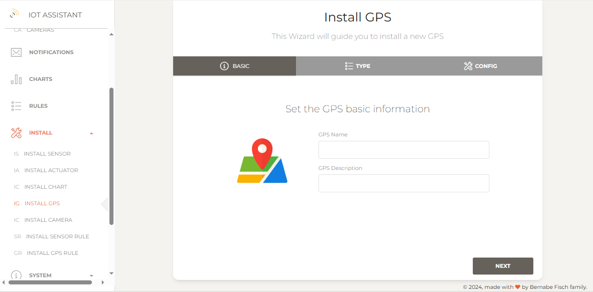
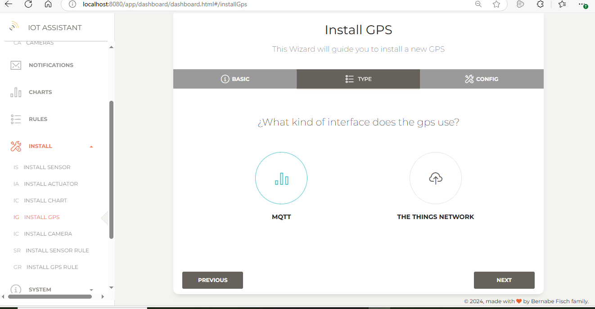
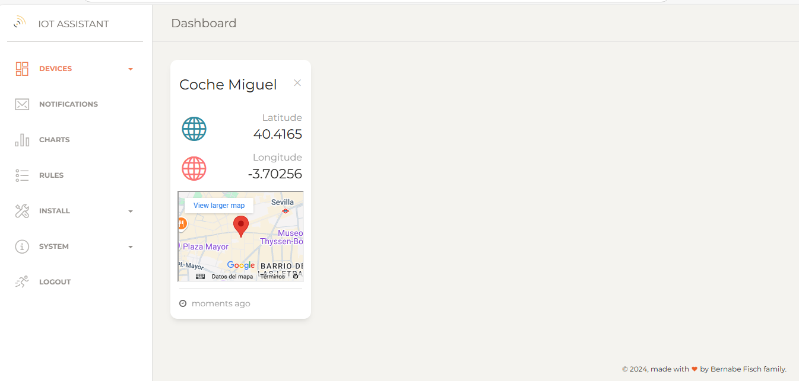
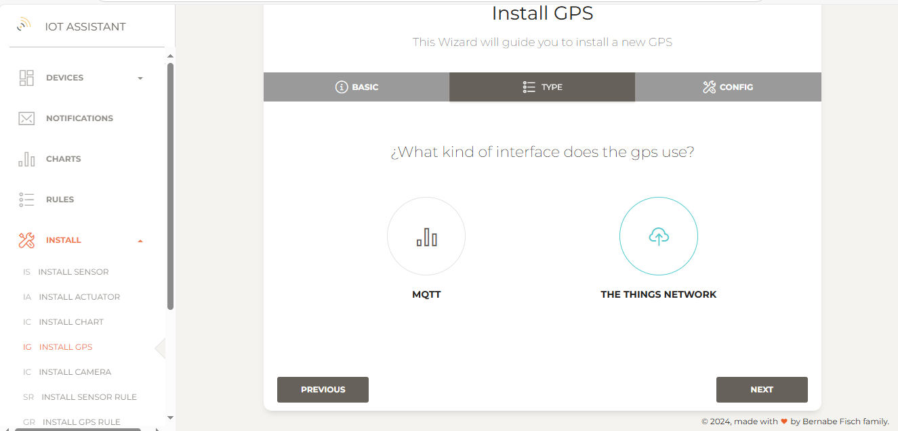
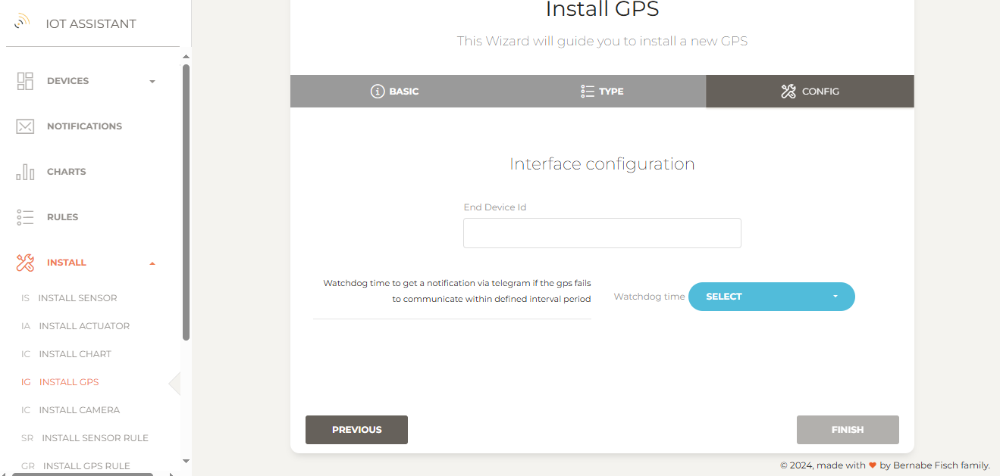

Managing GPS's
Installing a MQTT GPS
To install a MQTT GPS go to Install > Install GPS in the left navigation bar to open the setup wizard.
1 - Enter a name and description the new GPS and click Next
 2 - Select an interface. For an MQTT GPS, choose MQTT and click Next {kind=link}
{kind=link}
3 - In the next step, confirm the settings provided. Optionally, set a watchdog interval to receive notifications if the GPS fails to communicate its position within a specified time.
{kind=link}
5 - Finally click on Finish to proceed. If everything is set up correctly, you'll be redirected to the GPS's page where installed GPS's are displayed.
On this page, GPS's positions are displayed as Unknown if no position has been published yet. Otherwise, the last published position in a map and its date are displayed. From here, you can also disable the watchdog or delete the GPS. 
{kind=link}
The MQTT GPS
The GPS sensor should publish values to the same broker that IoT Assistant is connected to (see this guide for broker configuration).
Topic
GPS position should be published to gps/{gps name} with {gps name} matching the name given during installation. For example, a GPS named "Coche Miguel" would use the topic:
gps/Coche Miguel
JSON
The message published by the GPS should be a JSON string looking like this:
{"longitude" : "40.753", "latitude": "-73.983"}
Arduino code
Installing The Things Network GPS
To install a GPS connected to The Things Network, follow the same steps as for MQTT, but select The Things Network as the interface instead of MQTT and click Next.
{kind=link}
Then, provide the End Device ID, which is the ID used when the GPS was set up on The Things Network platform.
{kind=link}
The Things network GPS
Payload
A Things Network GPS should publish a binary payload in this format for IoT Assistant to understand::
<latitude><longitude>
Latitude and longitude must be IEEE-754 float values (4 Bytes).
A valid payload look like this:
1100001010010011111101110100110001000010001000110000001100010010
11000010100100111111011101001100 : -73.983 (latitude)
01000010001000110000001100010010 : 40.753 (longitude)
The binary value size above is 8 Bytes. Its hex representation is C293F74C42230312